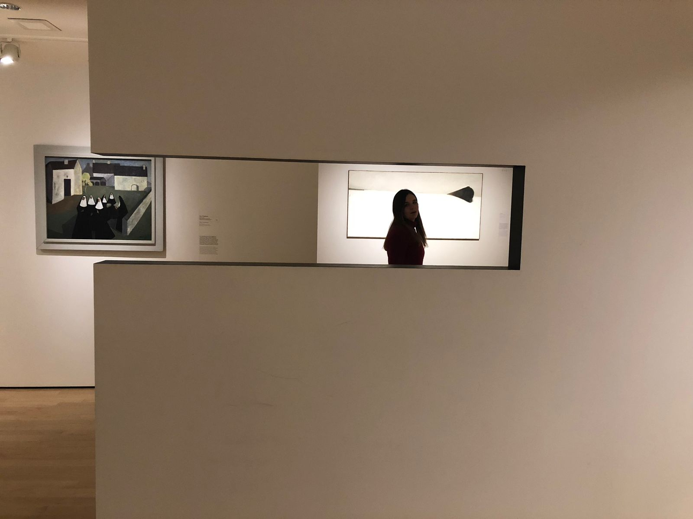
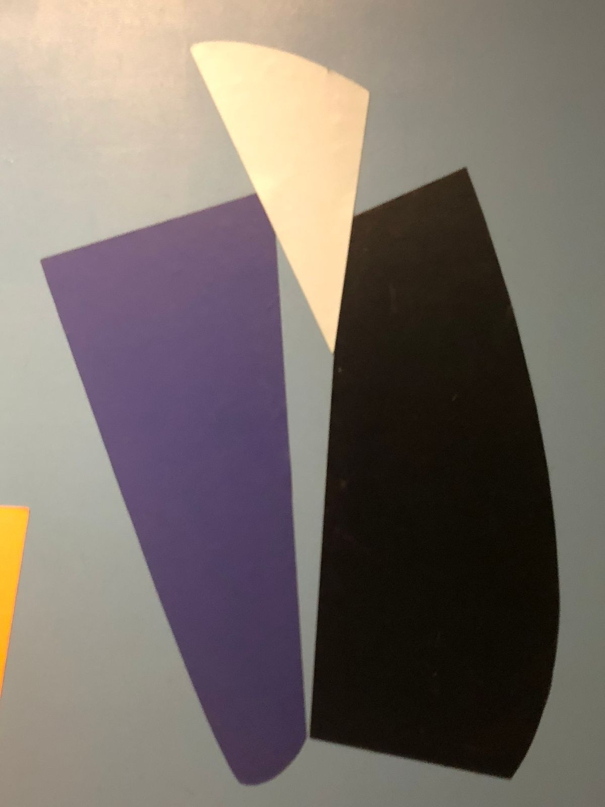
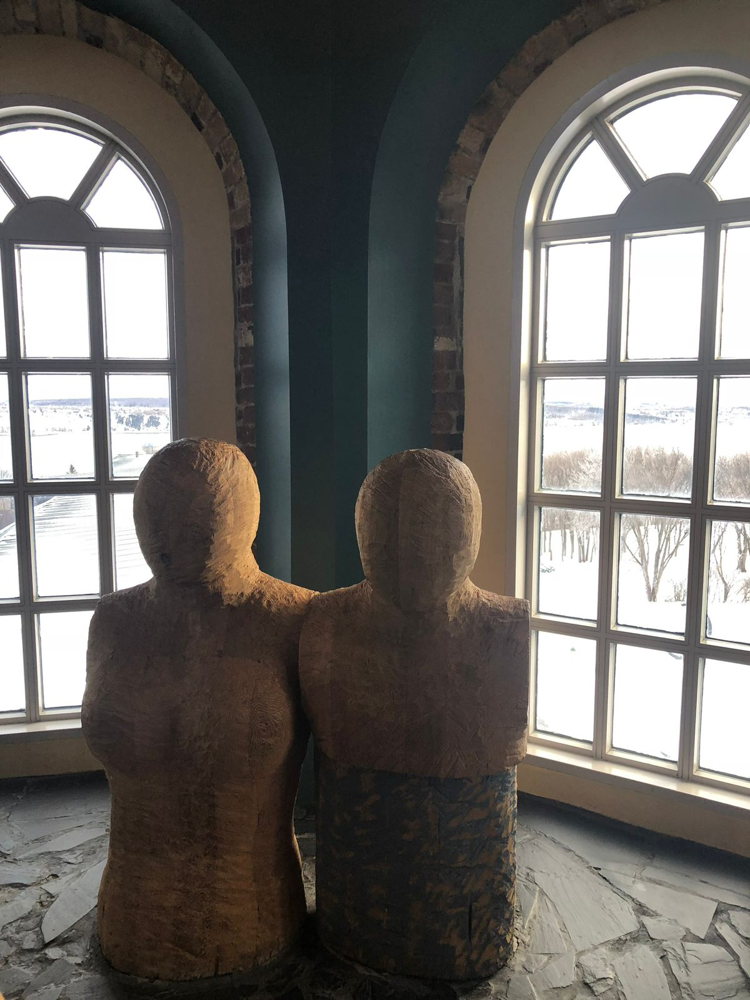

Museo de Arte



Uno de los museos más grandes de Montreal y uno de los más destacados de Canadá, el Museo de Bellas Artes de Montreal se encuentra a pocos pasos del casco antiguo. Encontrarás una combinación de disciplinas artísticas que van desde la moda hasta las bellas artes y desde la música hasta el diseño, y más. El museo alberga exposiciones permanentes y temporales y alberga una sala de conciertos. Durante su visita, puede tomar un descanso en el Beaux-Arts Bistro, que sirve deliciosos refrigerios y refrigerios.